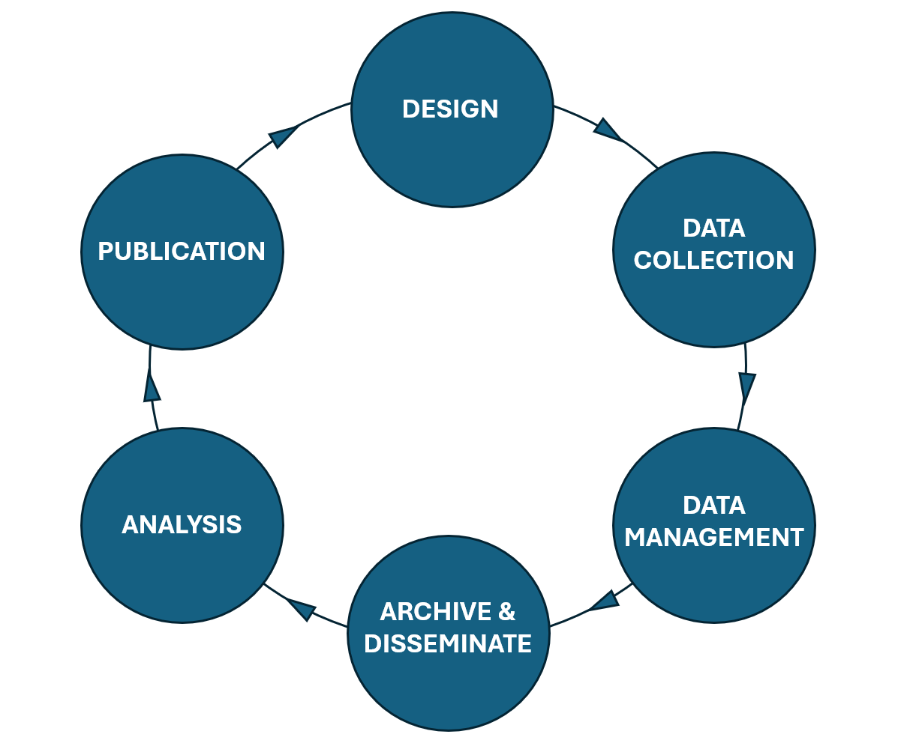

Unit 2.2 Metadata in the research lifecycle
Unit overview
Unit study time
- 1.5 hours
Intended learning outcomes
By the end of the unit, you'll be able to...
- Identify the different stages of the research lifecycle
- List research activities across the research lifecycle
- Recognise the creation and use of metadata in the context of the research lifecycle
- Identify how and why we use metadata in the research lifecycle
Research lifecycle
In this unit, we'll explore how metadata fits into the research lifecycle, helping us to conduct research activities.
The research lifecycle is the whole period of a research project from inception to publication and beyond. People also refer to the research data lifecycle which has a more specific focus on a project's data, covering the 'period of time that research data exists ... [describing] the flow of research data'[1] .
Try breaking down the research lifecycle into 6 stages and list the activities that might happen at each stage.
For example, the first stage might be Research Design. Activities within the Research Design stage could be...
- Decide roles and responsibilities in the research project
- Refine the aim and scope of your research project
- Set out a timeline for the research project
- Confirm funding streams for research project
- Select research methodology
- Outline usage and access of produced data
- Consider ethical and legal compliance of research
- Choose software for data collection, analysis and storage
- Create a Data Management Plan that includes the above information as well as the strategies to manage data throughout the research project
6 stages of the research lifecycle
We've labelled 6 stages of the research lifecycle as...
Design → Data collection → Data management → Archive & disseminate → Analysis → Publication
You may have come up with similar stages or something slightly different, for example the UK Data Service has its own interpretation of the research data lifecycle[2]. The stages above are based on the GSBPM Data Lifecycle Model[3]. While the title of the stages may change, they often encapsulate similar flow of research activities.
Click below to see the type of activities that might be included in each stage.
- Implement chosen research methodology e.g. administer surveys, conduct focus groups, conduct experiments or observational tasks etc.
- If not collecting primary data, collect secondary resources and/or datasets
- Create metadata for data as data is being collected
- Clean data and integrate it with other relevant datasets
- Convert data into reliable and commonly used formats
- Ensure restricted access data is encrypted and protected
- Back-up data and implement data recovery strategies
- Create robust metadata capturing information about data, data collection processes and the research project as a whole
- Store data in trusted data archives and/or repositories
- Make project's metadata openly available and ensure it is findable on sites such as data repositories and catalogues
- Share information about the research through outlets such as workshops, webinars, blogs, public talks
- Apply statistical test and models to gain findings from the data
- Conduct thematic and discourse analysis
- Create data visualisations such as graphs and charts
Note: in some situations analysis will happen before the archive & dissemination phase. This is particularly the case if researchers are collecting primary data and want to publish their findings before releasing the data.
- Writing and submitting papers for peer-review and publication
- Deliver conference presentations
- Produce publication documentation that can be used for citations
The research lifecycle is often conceived as a circle. Why do you think that is?

By placing the stages in a circle, we illustrate the idea that research is an ever evolving process. Data, and the documentation around that data, can be updated or added to throughout. As research processes are complex, you may go through stages multiple times in a single project.
Data has the potential to serve many research activities beyond the original study. With good data practices, existing data can lead to new research questions, secondary research and cross-study comparisons, enabling the lifecycle to start again.
Which stages of the research lifecycle include metadata?
Metadata is a vital tool throughout the research lifecycle and should be included in all stages. Having strong metadata helps people both outside a project who are engaging with research data (metadata users), as well as researchers and data managers within a project who are managing data (metadata creators). The creation, management, and use of metadata should be integrated in all areas of the research lifecycle.
Using metadata in the research lifecycle
First, let's look at how we use other studies' metadata in the research lifecycle, particularly in the Research Design and Data Collection stages.
If you're doing primary research, you may need to identify existing research and datasets as part of a literature review in order to understand how your study could build on existing research.. Looking at past research may also help inform your study design and data collection method.
If you're doing secondary research, finding the right datasets for your project is a core part of the data collection stage. You may also need to find data for other activities or outputs outside of research, for example for policy briefings.
Finding the right data can be time consuming. If datasets have incomplete or poor quality metadata, it can be hard to locate them, know what data they contain and whether it will be useful for you.
How might you use metadata from other research projects to help discover research in the Research Design and Data Collection stages?
Expand the boxes below to explore how we can use metadata to discover, understand and access data in the Research Design and Data Collection stages.
Metadata can help us discover research
When robust metadata is available, you can search data repositories such UK Data Service or metadata catalogues such as CLOSER Discovery to discover datasets effectively. It's the project's metadata which enable the filter and search functions of these sites. We will explore these tools in more depth in the next unit 2.3.
Metadata can help us understand research
When you want to look into a dataset more closely, metadata helps you quickly understand what the data is about and how the research was conducted. It provides information on who produced the data and how the research was funded.
Metadata can tell us how to access data
Metadata lets you know how to access data and who to contact if you have further questions around the research project.
Creating metadata in the research lifecycle
Next, let's examine creating metadata in the research lifecycle.
Research can be a disconnected process. Information about data or research activities can be lost at different stages, stored in silos or not recorded at all. This means we don't have a clear picture of how the research was conducted or how the data was produced, limiting the transparency and trustworthiness of the project.
Creating metadata from the start of the research lifecycle builds a coherent story of the research activities and data throughout each stage. This is more efficient than creating metadata at the end of a project which can be time consuming and inaccurate as you have to rely on memory or pull together scattered documentation. Creating metadata helps you manage your data as you collect it, ensuring it can be properly archived and disseminated with the right level of documentation.
Having metadata stored in a centralised space means everyone can access the latest information about a project. For large research teams, this helps ensure everyone is on the same page and avoids the risk of producing multiple forms of the same documentation.
By creating metadata for your project, you have the information required for publishing your data easily accessible. For external audiences engaging with your research, your metadata helps people understand and trust your data, making it more likely for people to cite and re‑use your data.
How does creating metadata help us throughout the research lifecycle?
Expand the boxes to explore some of the benefits below.
Metadata connects the research process
Metadata can connect and accumulate information throughout the research process, building on previous information to document the whole data lifecycle in a coherent way, benefitting people both within a research project and externally.
Metadata documents different versions and iterations of data
Metadata captures when data or the documentation around data are updated or changed, creating strong provenance. This gives a clear picture of the evolution of (meta)data in a research project and beyond, increasing its transparency and credibility.
Creating metadata throughout each stage of the research lifecycle saves time
Creating metadata from the very start of the research lifecycle allows you to build on information you've already captured and re-use metadata terms where necessary. This not only saves you time but ensures your metadata is consistent. Creating metadata as it happens further increases its quality, as you capture information while it's fresh, rather than trying to remember all the details at the end of a research project.
Map the metadata to the research lifecycle stage
While metadata should be created and updated throughout the research lifecycle, the type of metadata you create will depend on where you are in the research lifecycle. For example, if you've just started your research and you're in the Research Design stage, you won't be able to capture metadata about the data such as how many cases (data points) you collected, how many valid and invalid cases there are.
🔍 Practice activity
Looking at the metadata elements below, at what stage of the research lifecycle do you think we'll be able to capture this information?
- Author(s)
- Abstract
- Variable label (describing the variable)
- Number of cases
- Invalid cases for a variable (data that has been collected incorrectly so cannot be included in analysis)
- Question label (describing the question if a questionnaire was conducted)
- Version of the dataset
- Funding body
- Unit of measurement for a variable
Answers
Author(s)
- Research Design phase: you could capture this information at the beginning of the research lifecycle in the Research Design phase. You could identify or create an ORCID as needed in order to capture this. Author(s) may need to be updated if more people join your research project. It's especially important that this information is correct when you come to the Publication phase.
Abstract
- You would most likely write an abstract at the publication stage as it is a tool to help other people can an overview of your entire research effort.
Variable label
- You could capture this metadata at the research design or data collection stage.
Number of cases - You could capture this metadata at the data collection or analysis stage.
Invalid cases for a variable
- You would capture this at the analysis stage.
Question label (if conducting a survey)
- You could capture this metadata at the research design stage.
Version of the dataset
- You would create this metadata in the data collection stage, but it's important this information is updated throughout the research lifecycle and beyond.
Funding body
- You can capture this in your Research Design phase and update it as necessary if new funders support your project.
Unit of measurement for a variable
- This metadata can be captured in the research design or data collection stage.
Provenance metadata
By creating metadata from the beginning of the research lifecycle and throughout, you build robust provenance.
Provenance is a type of metadata that captures the historical record of data as it moves through various stages, processes, and transformations in the research lifecycle [4]. Provenance metadata describes how the data came about for example, what measurement tool was used, who conducted the research or whether the variable was derived or not.
CODATA defines provenance as_ ...
A type of historical information or metadata about the origin, location or the source of something, or the history of the ownership or location of an object or resource including digital objects. For example, information about the Principal Investigator who recorded the data, and the information concerning its storage, handling, and migration. [5]
The quality of your research's provenance will increase as you continue to manage and update your metadata, giving a clear footprint of your research.

Explaining the relationships between metadata elements strengthens your data’s provenance. For example, a variable belongs to a dataset, and that dataset belongs to a study. A variable might also link to a survey question or other variables if it’s derived. These connections create a structure and hierarchy that help us understand the bigger picture and context of the data.
 Practice activity
Practice activity
Comparing provenance metadata
Examine the metadata for the variable: total household income.
| Metadata element | Dataset metadata |
|---|---|
| Variable name | Total Income for Household |
| Variable description | Total gross income received by all household members from all sources over the past 12 months |
| Derived Y/N | Yes |
We can see that the variable is derived however, we can't see which variables it was derived from and how it was calculated. We also don't know which dataset the variable belongs to. This limits our understanding of how the data was produced and reduces it's provenance.
What additional information could we capture in the metadata to improve its provenance?
| Metadata element | Dataset metadata |
|---|---|
| Variable name | Total Income for Household |
| Variable description | Total gross income received by all household members from all sources over the past 12 months |
| Derived Y/N | Yes |
| Source variables | Income_Employment, Income_SelfEmployment, Income_StateBenefits, Income_Pensions, Income_Investments, Income_Other |
| Derivation method | Sum of all income components across all household members, excluding missing or invalid entries |
| Dataset | Household Economic Survey 2016 |
In this metadata set, we know the source variables used to calculate 'Total Income for Household', how the calculation was made and what dataset the derived variable belongs to. This information strengthens the data's provenance as it tracks how the data is produced and how it relates to other research objects. Strong provenance makes data easier to understand and trust.
You can see an example of good data provenance for derived variables in the National Child Development Study[6] on CLOSER Discovery[7]. For example, examine the following variables...
- (Derived) No. of fostered children left the hh since last sweep[8]
- (Derived) BMI at Interview (age 44) [9]
Through exploring the tabs on the variable catalogue page we can find ...
- The list of variables used to produce the derived variable in the 'Lineage' tab.
- The dataset the variable belongs to, and which study the dataset belongs to. We can also easily navigate to the dataset and study pages to gain more information about them.
- Information about when the metadata was last updated.
Test your knowledge
True or false...
- Metadata should be created only after the research project is completed.
- Another research project's metadata can help us in our own research study.
- Metadata is only useful during the data collection phase of research.
- Provenance information is useful for assessing the reliability and quality of data.
Answers
- Metadata should be created only after the research project is completed. FALSE
- Another research project's metadata can help us in our own research study. TRUE
- Metadata is only useful during the data collection phase of research. FALSE
- Provenance information is useful for assessing the reliability and quality of data. TRUE
Further resources
If you want to explore the research lifecycle in more detail, take a look at these resources.
- The RDM Kit have broken down the different stages of the data lifecycle here
- You can explore an interactive data lifecycle tool on CESSDA's DMEG here
- Explore UK Data Service's conception of data lifecycle here
- Office of Library and Information Services Data lifecycle
- University of Vienna: the research data lifecycle
References
- [1] CODATA (2025) RDM Terminology Bank: Research data lifecycle
- [2] United Nations Economic Commission for Europe (2025) 'Generic Statistical Business Process Model (GSBPM)' Switzerland: UNECE
- [3] UK Data Service (2019) Research Data Lifecycle [Online Video] www.youtu.be/-wjFMMQD3UA
- [4] IBM (2025) What is data provenance?'
- [5] CODATA (2025) RDM Terminology Bank: Provenance
- [6] University of London, Institute of Education, Centre for Longitudinal Studies. (2024). National Child Development Study: Age 50, Sweep 8, 2008-2009. [data collection]. 3rd Edition. UK Data Service. SN: 6137, DOI: http://doi.org/10.5255/UKDA-SN-6137-2
- [7] CLOSER (2025) 'National Child Development Study' CLOSER Discovery
- [8] University of London, Institute of Education, Centre for Longitudinal Studies. (2024). National Child Development Study: Age 50, Sweep 8, 2008-2009. [data collection]. 3rd Edition. UK Data Service. SN: 6137, DOI: http://doi.org/10.5255/UKDA-SN-6137-2
- CLOSER (2025) '(Derived) No. of fostered children left the hh since last sweep in Age 50 Survey, National Child Development Study' (2008) CLOSER Discovery
- [9] University of London, Institute of Education, Centre for Longitudinal Studies. (2024). National Child Development Study: Age 50, Sweep 8, 2008-2009. [data collection]. 3rd Edition. UK Data Service. SN: 6137, DOI: http://doi.org/10.5255/UKDA-SN-6137-2
- CLOSER (2025)'(Derived) BMI at Interview (age 44) in Age 44 Biomedical Survey (2002), National Child Development Study' CLOSER Discovery